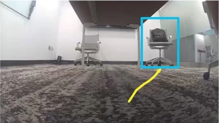
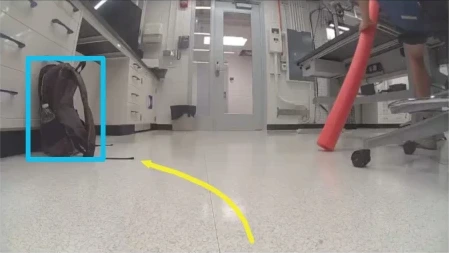

TL;DR: A VLM teaches itself to navigate from language by explaining recorded demonstrations — no human goal or reasoning labels needed.
Same scene, different prompt — pick one to see the rollout.

Task: Navigate to the chair with a black bag on it
Perception: The scene shows an indoor office space with carpeted floors and walls. There are two chairs visible, one with a black bag on it. The robot is positioned near the edge of the room, facing towards the chairs.
Agents: Two chairs, one with a black bag on it.
Prediction: The robot is likely stationary or moving slowly, as there are no visible signs of motion or interaction with the environment.
Planning: The robot should navigate towards the chair with the black bag. This involves turning slightly to the right to align with the target chair.
Trajectory: {"future_trajectory": [[0.093, -0.008], [0.461, -0.06], [0.811, -0.172], [1.131, -0.331], [1.429, -0.531], [1.713, -0.74], [2.011, -0.943], [2.31, -1.139], [2.621, -1.331], [2.921, -1.513], [3.221, -1.711], …]}

Task: Navigate to the brown bag
Perception: A white floor with a few scattered objects, including a backpack and a red object. The scene appears to be indoors, possibly in a laboratory or office setting. The backpack is positioned near the bottom left of the image, and the red object is closer to the center-right.
Agents: A backpack and a red object are visible on the floor.
Prediction: The backpack is likely stationary, as it is not moving. The red object might be moving slightly, but its motion is unclear due to the limited frame.
Planning: The robot should navigate towards the backpack. The backpack is clearly visible and located near the bottom left of the image. Maintaining direction keeps the robot centered on the path leading to the backpack.
Trajectory: {"future_trajectory": [[0.038, -0.009], [0.187, -0.041], [0.327, -0.066], [0.458, -0.081], [0.58, -0.084], [0.695, -0.074], [0.805, -0.05], [0.912, -0.02], [1.017, 0.041], [1.122, 0.107], [1.228, 0.186], …]}
| Directions | Objects | Multi-stage | ||||||||
|---|---|---|---|---|---|---|---|---|---|---|
| Method | Straight door− | Left chair+ | Right chair* | Blue chair− | Trash bin− | Chair+ | Monitor* | Doorway+ | Hallway* | Avg. |
| OmniVLA | 0.8 | 0.9 | 0.2 | 0.7 | 1.0 | 0.4 | 0.2 | 0.7 | 0.0 | 0.54 |
| NaVILA | 0.3 | 0.2 | 0.1 | 0.4 | 0.1 | 0.3 | 0.2 | 0.3 | 0.5 | 0.27 |
| Qwen2.5-VL-ASD | 0.9 | 1.0 | 0.8 | 1.0 | 0.9 | 0.9 | 0.7 | 0.8 | 0.6 | 0.84 |
| Qwen3.5-VL-ASD | 1.0 | 1.0 | 0.9 | 1.0 | 1.0 | 1.0 | 0.9 | 0.9 | 0.8 | 0.94 |
| Method | Sidewalk | Statue | Tree | Car | Avg. |
|---|---|---|---|---|---|
| OmniVLA | 1.0 | 0.6 | 1.0 | 1.0 | 0.90 |
| NaVILA | 0.9 | 0.1 | 0.0 | 0.3 | 0.33 |
| Qwen2.5-VL-ASD | 1.0 | 0.8 | 1.0 | 1.0 | 0.95 |
| Qwen3.5-VL-ASD | 1.0 | 0.9 | 1.0 | 1.0 | 0.98 |
| Method | Success ↑ | Completion time (s) ↓ |
|---|---|---|
| OmniVLA | 0.9 | 25.3 |
| NaVILA | 0.2 | 28.9 |
| Qwen2.5-VL (vanilla) | 0.0 | — |
| Claude Opus 4.7 | 0.7 | 846.1 |
| Qwen2.5-VL-ASD | 1.0 | 15.3 |
| Method | Right chair | Chair | Monitor | Hallway | Car | Avg. |
|---|---|---|---|---|---|---|
| ASD, goal-only supervision | 0.4 | 0.2 | 0.2 | 0.1 | 0.4 | 0.26 |
| ASD, reasoning off at inference | 0.1 | 0.2 | 0.2 | 0.0 | 0.2 | 0.14 |
| Claude Opus 5 labels + SFT | 0.3 | 0.5 | 0.3 | 0.3 | 0.4 | 0.36 |
| Qwen2.5-VL labels + SFT | 0.4 | 0.3 | 0.3 | 0.0 | 0.1 | 0.22 |
| NaVILA (RECON + FrodoBots-2K SFT) | 0.0 | 0.1 | 0.2 | 0.3 | 0.2 | 0.16 |
| Qwen2.5-VL-ASD | 0.8 | 0.9 | 0.7 | 0.6 | 1.0 | 0.80 |
| Qwen3.5-VL-ASD | 0.9 | 1.0 | 0.9 | 0.8 | 1.0 | 0.92 |
| RECON | FrodoBots-2K | |||||||
|---|---|---|---|---|---|---|---|---|
| Method | ADE | ATE | MAE | MSE | ADE | ATE | MAE | MSE |
| Gaussian Policy | 0.226 | 0.321 | 0.144 | 0.059 | 0.034 | 0.046 | 0.019 | 0.002 |
| Gaussian Mixture | 0.260 | 0.364 | 0.166 | 0.084 | 0.036 | 0.050 | 0.020 | 0.002 |
| Diffusion Policy | 0.180 | 0.238 | 0.108 | 0.045 | 0.034 | 0.045 | 0.020 | 0.003 |
| Qwen2.5-VL + SFT | 0.192 | 0.247 | 0.115 | 0.042 | 0.064 | 0.061 | 0.027 | 0.007 |
| Alpamayo-1 + SFT | 0.303 | 0.362 | 0.188 | 0.091 | 0.093 | 0.106 | 0.055 | 0.041 |
| OpenVLA + SFT | 0.341 | 0.417 | 0.208 | 0.114 | 0.246 | 0.269 | 0.138 | 0.072 |
| Qwen2.5-VL-ASD | 0.174 | 0.227 | 0.104 | 0.037 | 0.031 | 0.042 | 0.017 | 0.004 |
@inproceedings{feng2026asd,
title = {Training Generalist Navigation Policies via Action Self-Distillation},
author = {Feng, Bowen and Wang, Keqin and Yang, Yulong and Joshi, Amogh
and Allen-Blanchette, Christine and Shah, Dhruv and Heide, Felix},
booktitle = {Conference on Robot Learning (CoRL)},
year = {2026},
}